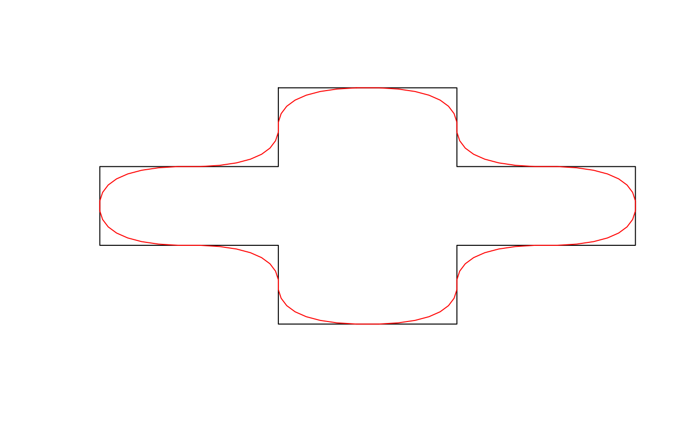
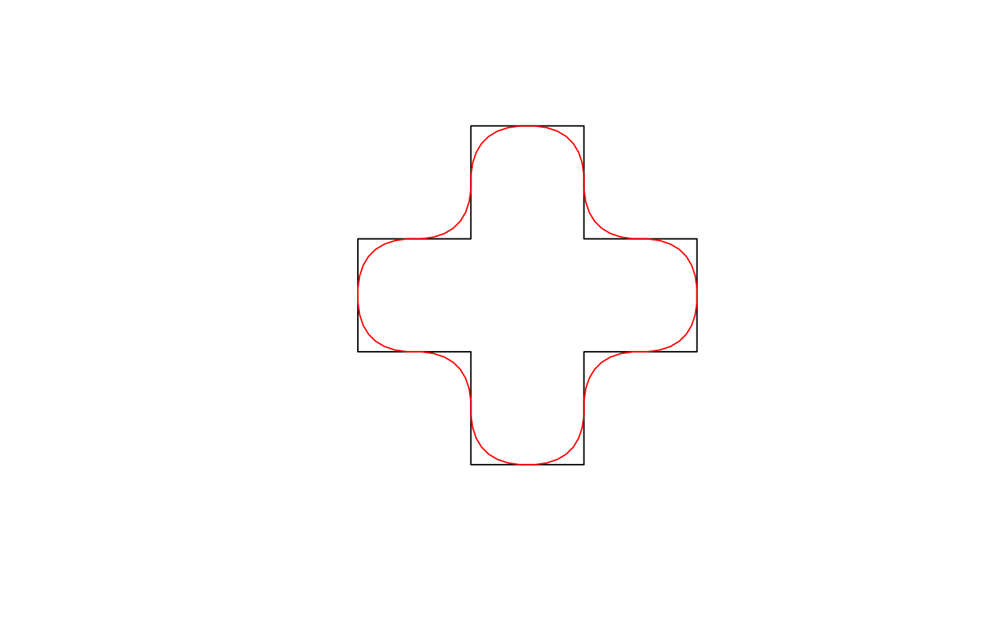

Chaikin's corner cutting algorithm smooths a curve by iteratively replacing every point by two new points: one 1/4 of the way to the next point and one 1/4 of the way to the previous point. This method results in a curve that does not pass through the vertices of the original curve.
smooth_chaikin(x, wrap = TRUE, refinements = 3L)
| x | numeric matrix; 2-column matrix of coordinates. |
|---|---|
| wrap | logical; whether the coordinates should be wrapped at the ends, as for polygons and closed lines. |
| refinements | integer; number of corner cutting iterations to apply. |
A matrix with the coordiantes of the smoothed curve.
This function works on matrices of points and is generally not called
directly. Instead, use smooth() with method = "chaikin" to apply this
smoothing algorithm to spatial features.
The orginal reference for Chaikin's corner curring algorithm is:
Chaikin, G. An algorithm for high speed curve generation. Computer Graphics and Image Processing 3 (1974), 346–349
This implementation was inspired by the following StackOverflow answer:
# smooth_chaikin works on matrices of coordinates # use the matrix of coordinates defining a polygon as an example m <- jagged_polygons$geometry[[2]][[1]] m_smooth <- smooth_chaikin(m) class(m)#> [1] "matrix"class(m_smooth)#> [1] "matrix"plot(m, type = "l", axes = FALSE, xlab = NA, ylab = NA)lines(m_smooth, col = "red")# smooth is a wrapper for smooth_chaikin that works on spatial features library(sf) p <- jagged_polygons$geometry[[2]] p_smooth <- smooth(p, method = "chaikin") class(p)#> [1] "XY" "POLYGON" "sfg"class(p_smooth)#> [1] "XY" "POLYGON" "sfg"plot(p)